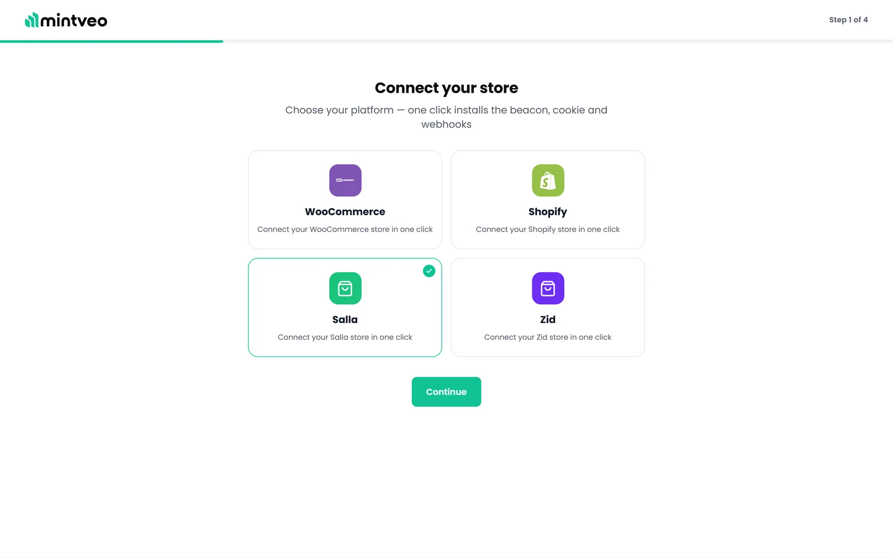
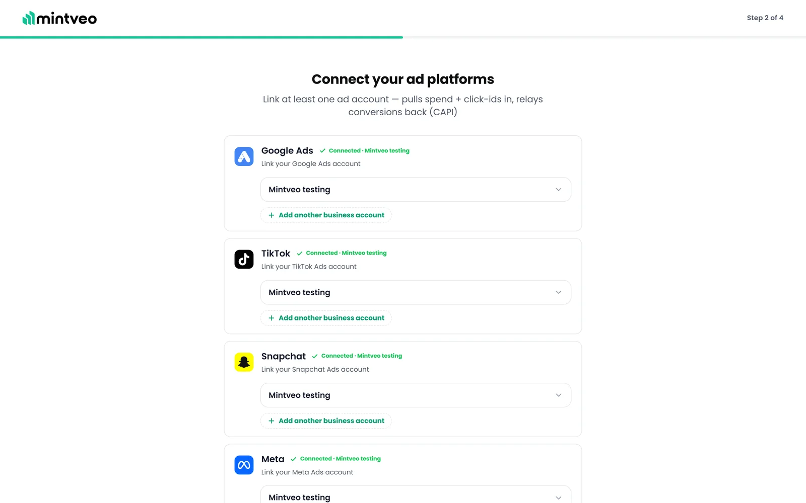
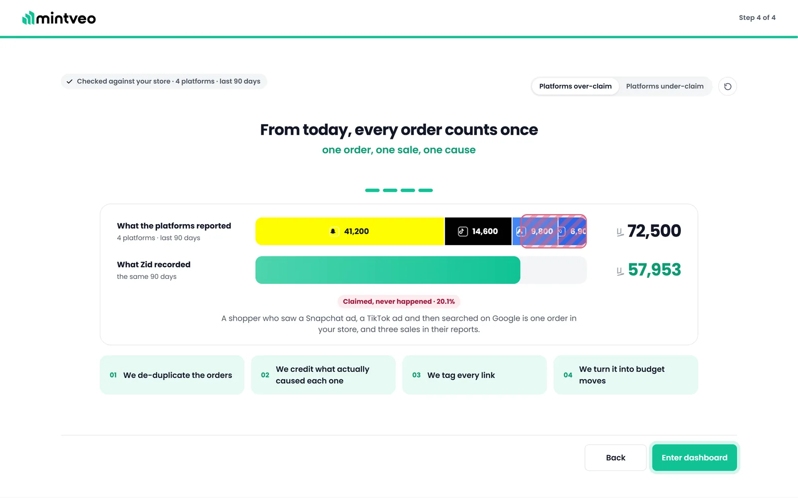
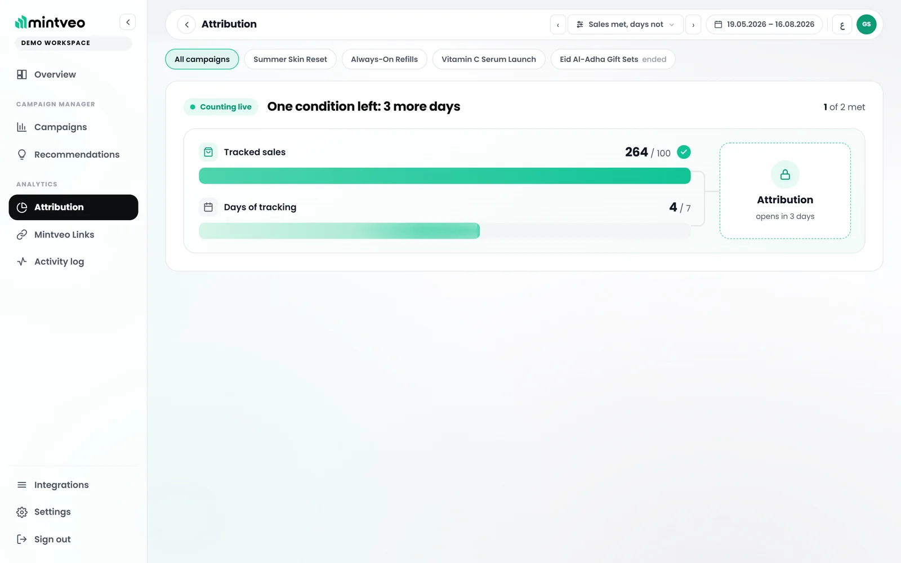
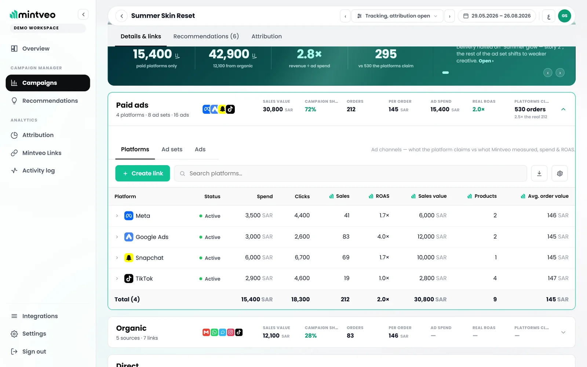
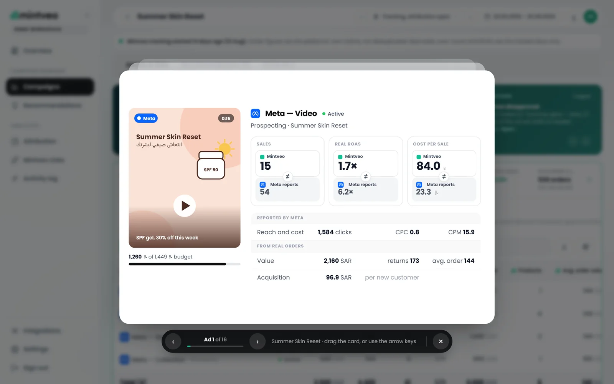
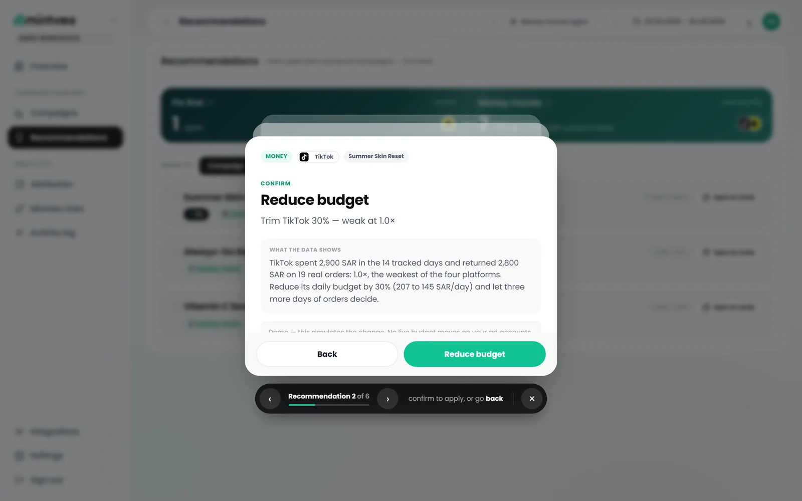
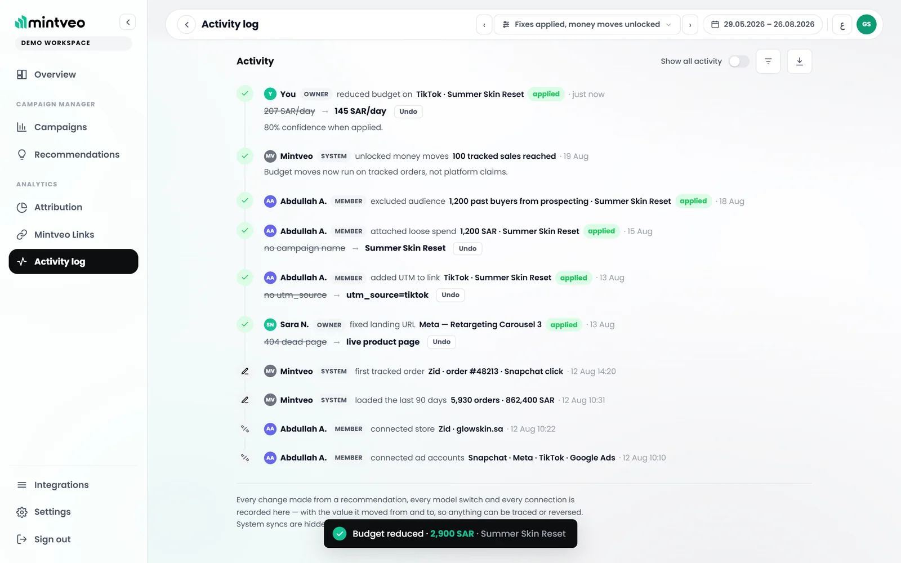

Campaign Enhancer.by Mintveo
Every ad platform claims the same sale. I designed the product that counts every order once, decides which ad gets credit for each sale using a stated method (attribution) and shows where the data is uncertain, then turns the gap into budget moves the merchant confirms before they apply.

The working prototype: what the platforms claimed against what the store recorded.
Every ad platform claims the same sale, so a merchant's dashboards add up to more than the store ever sold. Campaign Enhancer, Mintveo's second project, counts every order once and turns the gap into budget moves applied in one tap. I redesigned it page by page across ten versions.
Evidence at a glance
Who did what
| UI and flows | Me |
|---|---|
| Working prototype, built with AI (Claude Code) | Me |
| Product input and priorities | The PO |
| MVP build (next) | The developer |
The 30-second version
- The problem. In the demo store, the platforms claim 165,100 SAR of sales that can be traced to 63,830 SAR: a 2.6× over-count.
- My role. Product designer on a three-person team, owning Attribution (which ad gets credit for a sale) and the Customer Journey.
- The key decision. Attribution stays locked until the store has 100 tracked sales and 7 days of data, and the screen says what is missing.
- Where it is. A working prototype in its tenth version, in English and Arabic. First release (MVP) next. Every number here is the demo store's.
A working prototype, ten versions in
A working prototype, not a launched product. The MVP ships tracking and Fix first, with Money moves to follow. No customers to quote yet, so every number here belongs to the demo store. The public face is live: mintveo.com.
Real prototype screens, demo data labelled as demo.
Ad platforms grade their own homework
A shopper sees a Snapchat ad, clicks a TikTok ad, then buys from Google. One order, and three platforms report it as their own sale. Campaign Enhancer reads the orders from the store, follows each click and decides which ad gets credit for each sale using a stated method (attribution). The merchant should understand the gap in seconds and act on it after a confirm step.
The merchant with four dashboards open
A store in Saudi Arabia selling on Zid or Salla, with ads on four platforms and a team that reads Arabic and English.
What they need
One sales number they can trust, which channel gets the credit and why, and a move they can apply.
The tension
A model needs data before it can be trusted, and the merchant wants answers today. The design is about how to say "not yet" without losing them.
The calls that shaped it
Locked until it's true
Neutral claims, never accusations
Fix first, then move money
One tap to act, with the evidence on the card
Tell the story before the dashboard
Connect, count, credit, act
Real screens from the working prototype, with demo data.
Connect

Store · one click installs tracking on Salla, Zid, Shopify or WooCommerce.

Ad accounts · each platform connects without leaving the step.

The story · claims, the store, the gap, before the first dashboard.
Count and credit
Overview · the gap between claims and real sales is filled rose.

The gate · two conditions, one met, and what's left.

Attribution · where the credit really lands.
Act

Campaign · paid and organic, down to the ad.

Ad card · every figure is a neutral pair.

Recommendations · Fix first, then Money moves.

Card deck · swipe to apply or dismiss, with the reason on the card.

Confirm · the evidence again before the budget changes.

Activity log · every change, by whom, from what to what.
Mint means action, and only action
Built on the Mintveo design system I made for the MMM platform.
- Layer 1 · Tokens
Colour with a job
Mint is for actions only. In charts, rose is what the platforms claimed.
- Layer 2 · Components
Components
The attribution gate, the claim pair, the card deck and the activity log row.
- Layer 3 · Screens
Calm surfaces
No shadows or decorative colour, so the data has all the contrast.
- In the prototype
Built for two directions
Every page mirrors for Arabic, sidebar and all, with amounts in riyals.
What changes for Arabic
The prototype runs in English and Arabic from one set of components. Arabic is my first language, so I check every mirrored page as a reader, not only as a designer.
Layout
Direction is set once for the whole app, so every page mirrors together. The side panel moves to the right edge, where an Arabic reader starts.
Type and numbers
Arabic gets its own font stack. Amounts stay in the same digits in both languages, in riyals, and links, codes and emails stay left to right inside Arabic text.
Charts and bars
I check every chart, the channel bar and the claim pairs on the mirrored page, because a flipped bar can change what it says.
Four films from the real screens
I made the launch films in code (Remotion) from the real prototype screens.
Launch film · 60 s, narrated. Sound on.
Promo · 15 s, silent.
Two vertical cuts, for Reels and TikTok
A 9:16 cut of the launch film and a 30 s reel. Every crop is narrow enough to read on a phone.
Built with AI, decided by me
I design, Claude Code writes the prototype's code, and I check everything it hands back. This is the loop behind the versions.
1 · The design system sets the limits
Before every batch, the AI reads the Mintveo token sheet and my written rules: mint is for actions only, no drop shadows, hover is a mint outline, a flat page background, Poppins. It builds with those components instead of making new ones.
2 · It plans first, I approve
It writes a plan before it builds anything. The plan is where I catch it inventing a state I never designed, like an empty list or a failed save, or a control that could never be used.
3 · The data is locked
Every batch changes the interface only. After each one, the demo data is compared with the first version. When a grouping figure appeared that was not in the data, I removed it, and the data set went back to 100% original.
4 · What I correct
Drift, mostly. Once nine buttons had drifted off the system, because the scale only had one size. I added a 32px size and brought all nine back. When a feature would have needed numbers we did not have, I blocked it instead of letting it fake them.
What changed across the versions
- Version 1. The team's starting demo, kept untouched as the baseline.
- Version 2. A full UI and UX redesign, page by page, from onboarding to the last screen.
- Versions 3 and 4. Corrections from two team reviews, and the buttons brought back onto the design system.
- Version 5. A teammate's own pass in the same file, which I checked and carried forward, and the side panel back.
- Versions 6 to 8. My review notes and the team's, worked through page by page.
- Versions 9 and 10. Another teammate's pass with day by day tracking and honest "based on N tracked days" lines, then the recommendations and the scenario picker.
Each version was frozen and handed over with a before and after card for every fix, the changelog and the reasons behind each change. The prototype is a shared file: teammates made their own passes in it and I merged them. The MVP build is the next step, so production code reuse is not proven yet.
One instruction, before and after
"Make the attribution page better."
"On Attribution only. Use the Mintveo tokens: mint for actions, no shadows, hover is a mint outline. Do not change any data value. Before you build, list every state you will add (locked, empty, loading) and wait for my OK."
An example of the kind of instruction I write, reconstructed from my working rules, not a copy of one prompt.